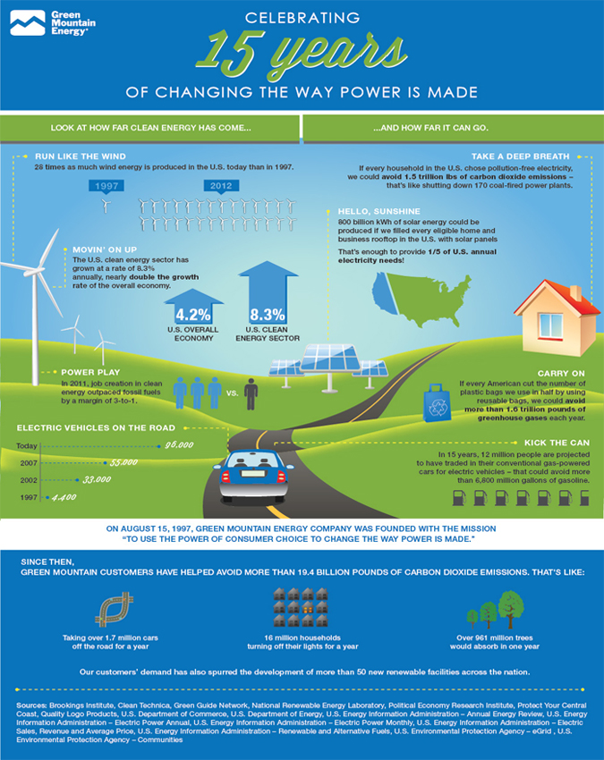

ABOUT
Green energy is energy that is produced in such a way as to minimize its negative impact on the environment. Traditional energy sources, most notably fossil fuels, produce greenhouse gases that are believed to be the primary cause of an effect known as global warming or climate change. Sources of green energy, such as solar, wind, geothermal, and hydro energy, are developed and promoted as alternative sources that make little or no contribution to climate change. Even nuclear energy is sometimes considered a green energy source, because some types of nuclear technology produce much less waste than oil and coal.1
Hydro Energy
This technology uses the movement of water to power turbines attached to generators, and in many countries, it provides a larger proportion of energy than any other green resource. Hydropower does not produce a significant amount of waste and provides a unique environmental advantage. Many of the largest hydroelectric damns make use of a reservoir, which can serve as a location for recreational activities. The presence of a large water supply can also provide valuable support for agricultural regions.
In some cases, however, damming a river and creating an artificial lake can cause damage to the environment. Fish may not be able to make their way past the dam, for example, reducing their populations. Man-made reservoirs require flooding an area that was previously dry, changing it dramatically. The Three Gorges Dam in China offers a clear example of both: the baiji or Yangtze river dolphin, which lived in the river where the dam was built, is now functionally extinct, and over 1 million people were forced to relocate when their towns were covered in water to create the reservoir.4
Solar Power
Solar power does not produce any emissions, is renewable, and is highly suitable for powering portable devices as well as homes. Many new homes take solar energy generation into consideration as a design concept, with solar panels and water-heating systems. While the goal of solar-powered transport has not yet been achieved, the panels can be employed in vehicles as a source of power for air conditioning.
When it comes to large-scale energy production, the main disadvantage of solar technology is that solar panels and energy storage devices use a significant amount of land. This can be defrayed somewhat by building on land that is not suitable for other uses. Although the technology has improved, most are only about 20% efficient and can be expensive to install.5
Wind Power
Wind is used to generate energy with large turbines connected to a power collection, storage, and distribution system. This type of energy generation is a highly effective method of providing electricity to small, isolated communities. They are often preferred over solar-powered methods in agricultural areas, because land which contains wind turbines is more easily able to be used for other purposes. Off-shore wind farms have much higher building and maintenance costs, but they are able to harness stronger, more consistent winds.Because the turbines are large, some people complain that they are eyesores that distract from the beauty of the environment. There is also some concern that they could harm local bird and bat populations.6
Geothermal Energy
Geothermal energy is generated by the earth underneath its surface in the form of heat. While it is not technically a renewable source, it is sustainable more or less indefinitely, and produces only a small amount of waste in comparison to fossil fuels. Many countries use this type of energy for a portion of their requirements, but most thermal energy plants are located near tectonic plate boundaries, where the energy can be extracted more easily. The potential of geothermal energy to supply a significant portion of the world is limited by the expense of the technology it requires.7
Nuclear Energy
Some types of nuclear energy are categorized as green because they produce very small amounts of waste. A green nuclear reactor can burn its own nuclear waste to produce energy, relying on a process called nuclear transmutation. In this process, the waste is converted into progressively lower-energy forms via further similar reactions. This means that almost all of the available energy can be extracted from thorium or uranium, the fuel sources most often used in nuclear energy plants. Scientists believe that this form of energy production is so efficient, it could provide for 100% of the earth’s needs for up to five billion years.
Many people fear nuclear power, however, because of accidents like those at the Chernobyl Nuclear Power Plant in the Ukraine and the Fukushima I Nuclear Power Plant in Japan. A disaster of this magnitude can not only kill workers and others near the power plant, it could potentially lead to an increase in cancer in the population exposed to radioactivity released during the incident. A very small number of incidents of this magnitude have occurred, however, and even the Fukushima Daiichi disaster, which was one of the biggest in history, is not expected to increase cancer-related deaths in the area significantly.8
Cleaner Fossil Fuels
Aside from developing new energy sources, another goal of the green energy movement is to refine existing fossil fuel technology to make it more environmentally-friendly. An example of this is so-called clean coal technology, which attempts to reduce gas emissions from burning coal. One means by which this can be accomplished is to convert coal into a gas, and then generate energy by burning the gas. While this type of energy production is cleaner than traditional methods of burning fossil fuels, critics believe that the environmental cost is still too high. Another issue is that even though the technology is less harmful, coal is still a finite resource.9
HISTORY
Why Green Energy is Important?
The industrial revolution that began in the second half of the 18th century changed the world, with new methods of machine-based manufacturing leading to a profound increase in economic growth, population growth, and quality of life. At the time, the long-term consequences could not even be conceived of, much less felt; however, the burning of vast quantities of fossil fuels, such as coal and oil, has caused a great deal of harm to the environment. Most climatologists agree that the use of fossil fuels has contributed significantly to global warming. This term refers to the measured increase in the Earth’s surface temperature since the late 19th century and the environmental effects of this change.
The primary goal of developing green sources of energy is to generate power while minimizing both waste and pollution, to thereby reduce the impact of energy production on the environment. Scientists who advocate the use of green energy say that using such sources will reduce the rate at which climate change occurs, although it cannot stop or reverse the temperature increase. Another important objective is creating energy sources that are renewable. This is in contrast to fossil fuel sources, which are finite and estimated to be depleted before the end of the 22nd century.2

3